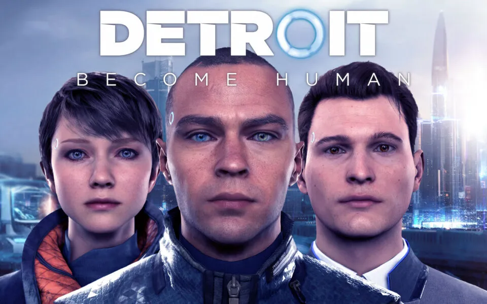
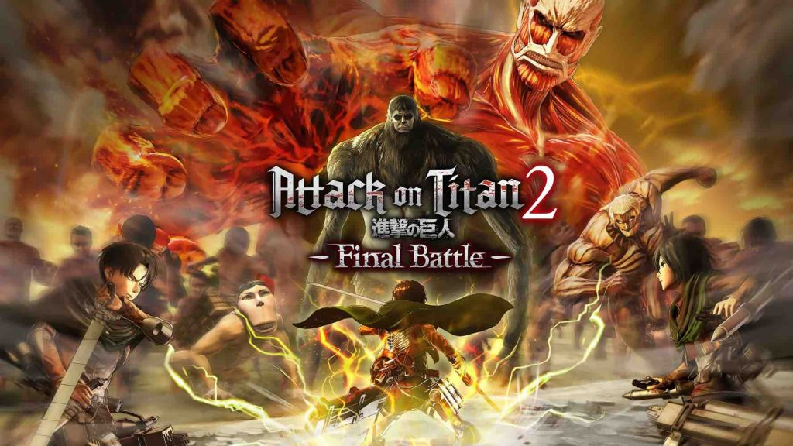
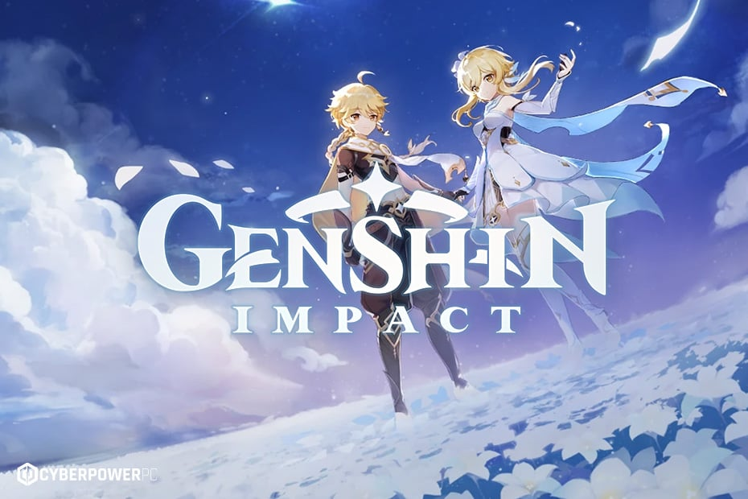
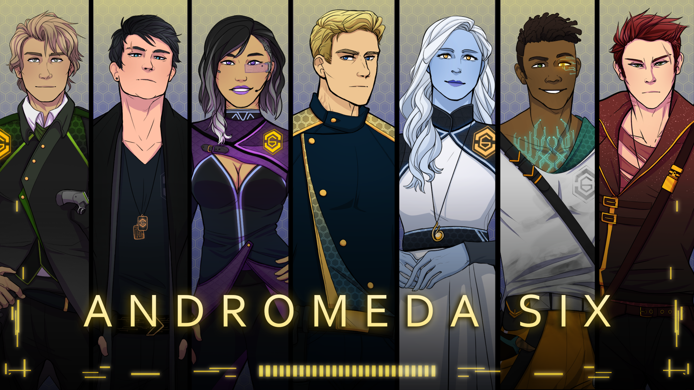

Every world I step into leaves something with me, and I leave a piece of myself behind.
Games have always been a way for me to explore new worlds, meet unforgettable characters, and make choices that ripple beyond the screen. Each game below has left a mark on me, not just in how I play, but in how I see storytelling. These are my top five favorites, each a journey I couldn’t put down.
Top Games
- Mass Effect Trilogy
- Detroit Becomes Human
- Attack on Titan 2: Final Battle (PS4 Version)
- Genshin Impact
- Andromeda Six
Games
Games have always been a way for me to explore new worlds, meet unforgettable characters, and make choices that ripple beyond the screen. Each game below has left a mark on me, not just in how I play, but in how I see storytelling. These are my top five favorites, each a journey I couldn't put down.

Mass Effect Trilogy
This series is my all-time favorite because of its storytelling and world-building. The relationships you build across three full games make everything feel earned, and your heart warms. The characters I bonded with immediately were Captain Anderson, Garrus, and Tali. From the first moment I met them, they became my ride-or-die. Even when others questioned me or didn't believe in me, they stood by my side, and that bond made every decision feel personal. The twists in the story - like the start of the second game and the third game - kept me on edge. It's a love-hate journey, but the story's emotional depth is unforgettable.

Detroit: Become Human
This game stands out for its branching paths and emotional storytelling. Playing as Connor, I often had to balance my instincts with the public's perception, and every choice felt heavy. Especially with Markus, who advocates for Android freedom, I felt a deep connection. That moment of struggle throughout the game reminded me of my ancestors' fight for freedom and equality. And the way the game let me explore peaceful choices or take a stand made it a transformative experience. What added to my expertise was unlocking clips that delved deep into the game's development, from the story and choices to the animation and graphic art style. The game was simply amazing.

Attack on Titan 2: Final Battle (PS4 Version)
I knew the anime's story before the game, but that didn't stop me from being completely hooked. The combat, especially once I mastered the movement, gave me this rush I'd never felt before. And even though I played knowing what would happen, the customization mode and the friendship feature really made me feel like I was part of the story. They contributed to making every battle feel personal. I'll never forget that Christmas when I first played it - every titan was a challenge, and every failure made me more determined.

Genshin Impact
Genshin pulled me in the moment I opened the game during COVID. I chose Lumine, and even though I knew I was starting out without my twin, as a triplet myself, I was captivated. The world of Teyvat felt so vast- I explored not just for quests but to find comfort in its quiet beauty. Characters like Venti, Zhongli, Xiao, Kazuha, and Scaramouche (aka Wanderer) became anchors for me. Each with a tragic weight, each carrying a story of longing and a need for company. And that moment, when I finally met my sibling again, the world opened up in a way I never expected. It's my comfort game - every return to Teyvat feels like coming home.

Andromeda Six
Though this game is a visual novel, slightly different from the ones I've listed, it also had a significant impact on me. You wake up with no memory, thrown into a strange world, and from there, June, one of the few unforgettable main characters in the story, became a character I couldn't forget. As the story unfolded, I discovered this tragic truth of my past and how, despite how horrible the current person of power is, those who came before him did nothing to change the poverty people faced. Each main character's story added depth. Even though the final episode hasn't dropped yet, I can't wait for its release and to finish this journey. It's ongoing, but it's one of the most immersive, character-driven stories I've ever experienced.
Where Passion Becomes Practice
These games didn't just entertain me. They shaped how I see storytelling, character development, and player choice. They showed me how powerful interactive worlds can be when emotion, design, and agency come together. The experiences I've had with these stories are a big part of why I started creating my own. If you'd like to see the games I've completed and the projects I'm currently building, you can explore my digital portfolio below. It's where inspiration turns into action, and where I begin telling my own stories.